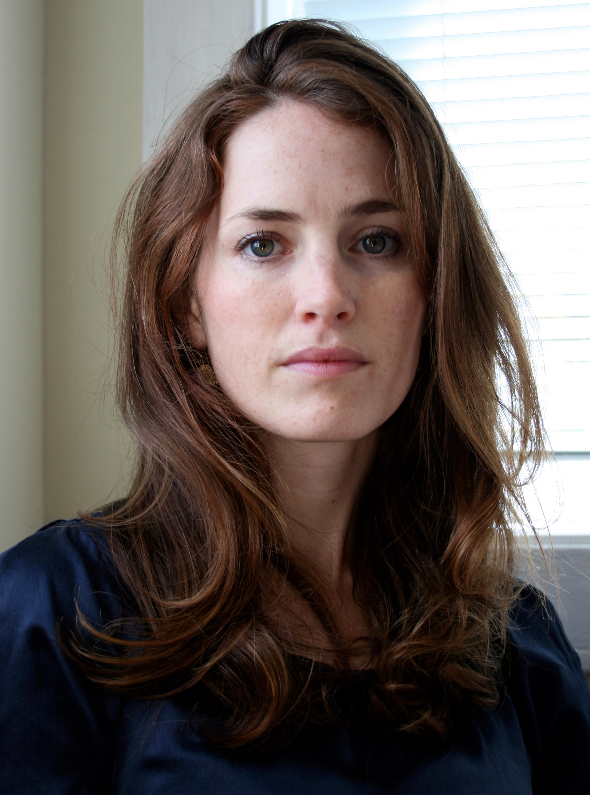
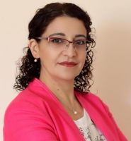
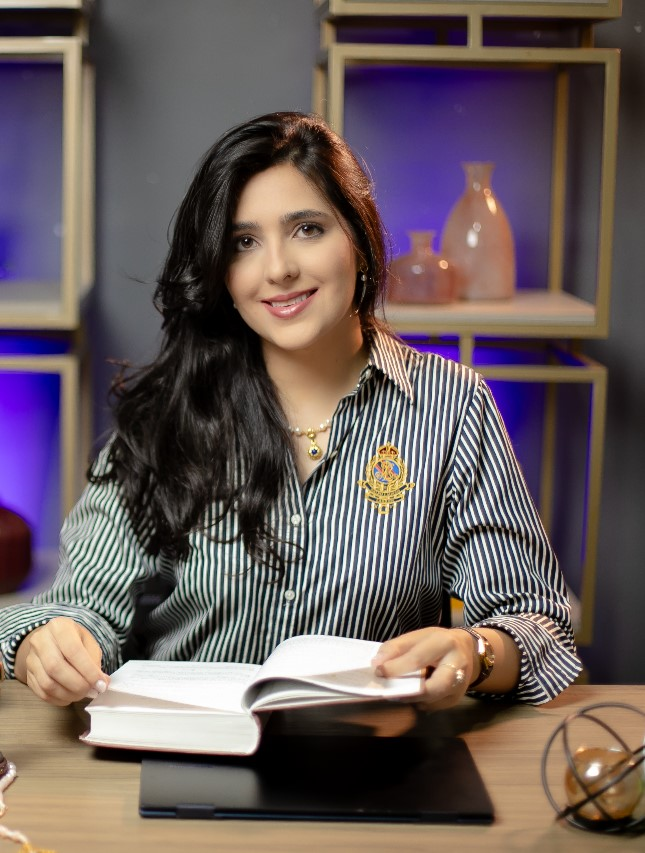
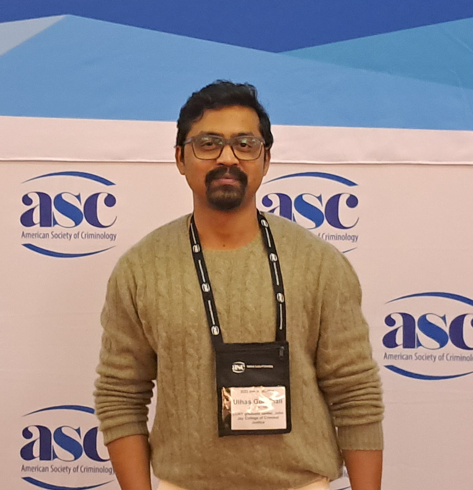

Team
Juliana Freire
https://vgc.engineering.nyu.edu/~julianaJuliana is a Tandon Institute Professor, Professor of Computer Science and Data Science at New York University, and co-director of the NYU Visualization, Imaging and Data Analysis (VIDA) Center.

Jennifer Jacquet
https://jenniferjacquet.com/Jennifer Jacquet is a Professor of Environmental Science and Policy at the Rosenstiel School of Marine, Atmospheric, and Earth Science at the University of Miami, and affiliated faculty with the Abess Center for Ecosystem Science and Policy. She is also Associate Research Director of the Climate Social Science Network (CSSN) at Brown University. From 2012–2022, she worked in the Department of Environmental Studies at New York University.

Gohar Petrossian
https://www.jjay.cuny.edu/faculty/gohar-petrossianDr. Gohar Petrossian is Associate Professor in the Department of Criminal Justice, Director of the International Crime and Justice Master's Program at John Jay College of Criminal Justice, and Deputy Executive Officer of the CUNY Graduate Center Criminal Justice Doctoral Program. Dr Petrossian is also the co-editor of the Problem-Oriented Policing Guides (at the popcenter.org) for Wilderness Problems.
Sunandan Chakraborty
https://sunchak.pages.iu.edu//Sunandan Chakraborty focuses on data science for social good. Building computational models that leverage vast data sets, he applies them to a broad spectrum of problems in social and environmental science, agriculture, health, and other fields. He draws on diverse data sets (news, social media, images, etc.) and uses tools such as big data analytics, machine learning, information extraction, and time series analysis to compile information and discover knowledge that can lead to solutions.
Juliana Barbosa
https://github.com/julesbarbosaJuliana is a Research Scientist at New York University - Visualization Imaging and Data Analysis Center
Kinshuk Sharma
https://github.com/kinshuk1207Kinshuk Sharma is a PhD candidate in Data Science at Indiana University Indianapolis. His research develops multimodal AI frameworks that combine computer vision and natural language processing. He aims to create scalable, explainable, and efficient AI systems that address real-world challenges in wildlife conservation and other fields.
Joshua Lang
https://www.gc.cuny.edu/people/joshua-langJoshua A. Lang is a doctoral student in the Criminal Justice program at John Jay College of Criminal Justice and CUNY Graduate Center. He earned his Bachelor's degree in Criminology and Criminal Justice from the College of Behavioral and Social Sciences at the University of Maryland – College Park and his Master's in Criminal Justice from John Jay College of Criminal Justice and CUNY Graduate Center. Joshua's research interests include temperament-based theory of antisocial behavior, juvenile delinquency, school-based crime prevention, theoretical integration, wildlife crime, and mental health within the criminal justice system. Joshua is in the process of receiving his Ph.D. within the following year.

Eduarda Ramos
https://github.com/julesbarbosaEduarda is a Computer Science PhD at New York University - Visualization Imaging and Data Analysis Center.

Ulhas Gondhali
https://scholars.jgu.edu.in/display/n14426Ulhas Gondhali is a Ph.D. candidate at John Jay College of Criminal Justice, City University of New York. His research examines the intersections of illegal wildlife trade, illegal, unreported, and unregulated (IUU) fishing, maritime security, and transnational organized crime.
Julia von Ferber
Julia von Ferber, Ph.D. is an Assistant Professor for the Department of Security, Fire and Emergency Management (SFEM) at John Jay College of Criminal Justice, CUNY. Her research focuses on applying Crime Prevention Through Environmental Design (CPTED) to measure crime in privately owned public spaces and cybercrime. Since 2018, Julia has taught courses in cyber-crime, cyber-crime investigations, cyber-security, and research methods and statistics. Julia completed her doctorates in Criminal Justice and holds an advanced certification in Data Science at The Graduate Center, CUNY.